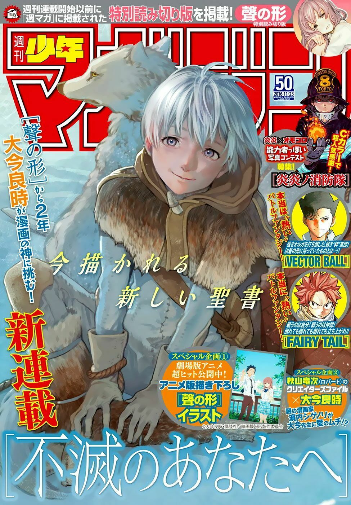

To Your Eternity
Thể loại: Fantasy, Phiêu lưu, Tâm lý
Mô tả:
To Your Eternity là một bộ fantasy – phiêu lưu – tâm lý kể về hành trình của một thực thể bất tử được gửi xuống thế giới để học cách tồn tại như con người. Tác phẩm tập trung vào sự sống, cái chết, ký ức và ý nghĩa của việc “sống vì người khác”, với nhịp kể chậm rãi, giàu cảm xúc và rất nhân văn.
Tóm tắt cốt truyện:
Một thực thể vô danh được tạo ra và thả xuống Trái Đất, ban đầu chỉ có khả năng bắt chước hình dạng của những gì nó tiếp xúc. Trên hành trình lang thang qua các vùng đất khác nhau, thực thể ấy dần mang hình dáng con người và được đặt tên là Fushi. Fushi gặp gỡ nhiều người với những hoàn cảnh, ước mơ và nỗi cô đơn riêng. Thông qua những cuộc gặp gỡ đó, Fushi học được ngôn ngữ, cảm xúc, tình bạn và nỗi đau của mất mát. Mỗi trải nghiệm đều để lại dấu ấn sâu sắc, giúp Fushi dần hiểu thế nào là sống, là gắn bó và là tiếp tục bước đi vì ký ức của những người đã từng đồng hành. To Your Eternity là hành trình trưởng thành không ngừng của Fushi, nơi mỗi cuộc gặp đều mang lại ý nghĩa, dù phải đánh đổi bằng sự chia ly.
Bình luận
Vui lòng đăng nhập để bình luận.